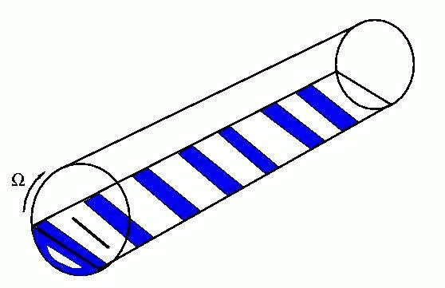

Dynamical model of axial separation in long rotating
drums
Igor Aranson (ANL) and Lev S. Tsimring (UCSD)
One of the most fascinating features of heterogeneous (i.e. consisting
of
different distinct components) granular
materials is their ability to segregate under the external agitation
rather then to further mix, as one would expect from the naive entropy
consideration.
Segregation has been observed in
most flows of granular binary mixtures, including granular convection,
hopper flows, and flows in rotating drums. Mixtures of grains withdifferent sizes in long rotating drums exhibit both radial and axial
size segregation. In case of radial segregation the grains of one type
(for grains of different sizes, the smaller ones) rapidly build up a
core near the axis of rotation. This radial separation is often
followed by slow axial segregation, with the mixture of grains
separating into the pure bands arranged along the axis of the drum.
Axial segregation leads to a stable array of concentration bands (see
the sketch below).

We developed a continuum description for the axial segregation of granular
materials in a long rotating drum based on the dynamics of the thin
near-surface granular flow coupled to bulk flow.
The equations of motion are reduced to the
one-dimensional system for two local variables only, the concentration
difference and the dynamic angle of repose, or the average slope of the
free surface. The parameters of the system are established
from comparison with experimental data. The resulting system
describes both initial transient traveling wave
dynamics and the formation of quasi-stationary bands of segregated
materials. A long-term evolution proceeds through slow logarithmic
coarsening of the band structure which is analogous to the spinoidal
decomposition described by the Cahn-Hilliard equation.
Supported by the U.S. Department of Energy